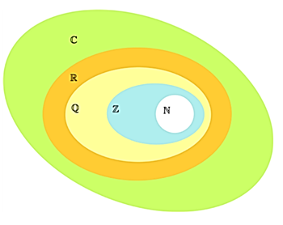
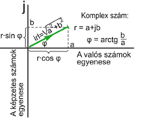
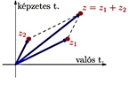

Tanulmányaink során először csak a természetes számokat ismertük meg, majd használni kezdtük a törteket, tizedes törteket és a negatív számokat. A valós számok fogalmát is megtanultuk.
Miért jött létre?
A számkörbővítésekre mindig azért volt szükség, hogy minden esetben elvégezhetőek legyenek
a matematikai
alapműveletek. A negatív számokra azért lett szükség, hogy el tudjuk végezni az ilyen kivonásokat is 3 –
8 és ne
csak az ilyeneket 9 − 5
A racionális számok az osztás miatt jelentek meg, hiszen a 3 : 5 osztásnak nincs megoldása az egész
számok
halmazán.
A valós számok halmazán pedig a gyökvonás művelete korlátozott.
A komplex számok bevezetése után a negatív számokból is lehetővé vált a négyzetgyökvonás √(-5).
Nincs olyan r valós szám, melyre r2 = −1.

A valós számok és a számegyenes pontjai között kölcsönösen egyértelmű leképezés létesíthető, a számfogalom további bővítése egy dimenzióban már nem lehetséges.
Szükség lett egy olyan számhalmazra, amely eleget tesz a következő kívánalmaknak:
- elvégezhető benne a négy alapművelet a szokásos műveleti tulajdonságokkal;
- tartalmazza a valós számok halmazát úgy, hogy az alapműveletek a valós számokon a megszokott módon működjenek;
- korlátlanul lehessen benne gyököt vonni.

Története
A 16. században olasz matematikusok versengtek a harmadfokú egyenlet megoldóképletének felfedezéséért. Girolamo Cardano 1547-ben publikálta eredményét. Valójában a megoldást egymástól függetlenül Scipione del Ferro és Nicolo Fontana, Tartaglia fedezték fel. Cardano a megoldóképletet Tartaglia-tól kapta, szigorú titoktartást ígérve. Rafael Bombelli zseniálisan használta a számolási szabályokat és a √(-1) szimbólumot. Később Leonhard Euler folytatta a számításokat.

Mire használjuk?
- Egyenletek megoldása
- Geometriai alakzatok, valós függvények megértése
- Fizika (folyadékok áramlása, kvantummechanika, a téridő szerkezete)
Jelölések
A komplex számokat a sík pontjaival, illetve a pontok helyvektoraival tudjuk szemléltetni. A komplex számok ábrázolására használt síkot szokás komplex számsíknak, illetve Gauss-féle számsíknak nevezni. Mivel a sík pontjait (és azok helyvektorait) egy valós számokból álló számpárral tudjuk leírni, a komplex számok is leírhatók egy ilyen számpárral: z = (a, b).

Komplex számnak nevezzük az a + bi alakú kifejezéseket, ahol a és b valós számok.
A z = a + bi valós része Re(z) = a. A z = a + bi képzetes része Im(z) = b.
Hogyan használjuk?
Műveletek algebrai alakban megadott komplex számokkal:
A z1 = a1 + b1i és z2 = a2 + b2i komplex számok összegén az (a1 + a2) + (b1 + b2)i komplex számot, különbségén az (a1 − a2) + (b1 − b2)i értjük.
A z1 = a1 + b1i és z2 = a2 + b2i komplex számok szorzatán az (a1a2 − b1b2) + (a1b2 + a2b1)i komplex számotdsadsadsa értjük.
Ha z1z = z2 és z1 ≠ 0, akkor z a z2 és z1 komplex számok hányadosa: z = z2/z1 .

| Neve | Jele | Példák |
|---|---|---|
| Természetes számok | N | 0; 4; 895 |
| Egész számok | Z | -7; -47 |
| Racionális számok | Q | 7/3; 2,54; 2/15; 3,87 |
| Valós számok | R | √2; π |
| Komplex számok | C | a + bi |